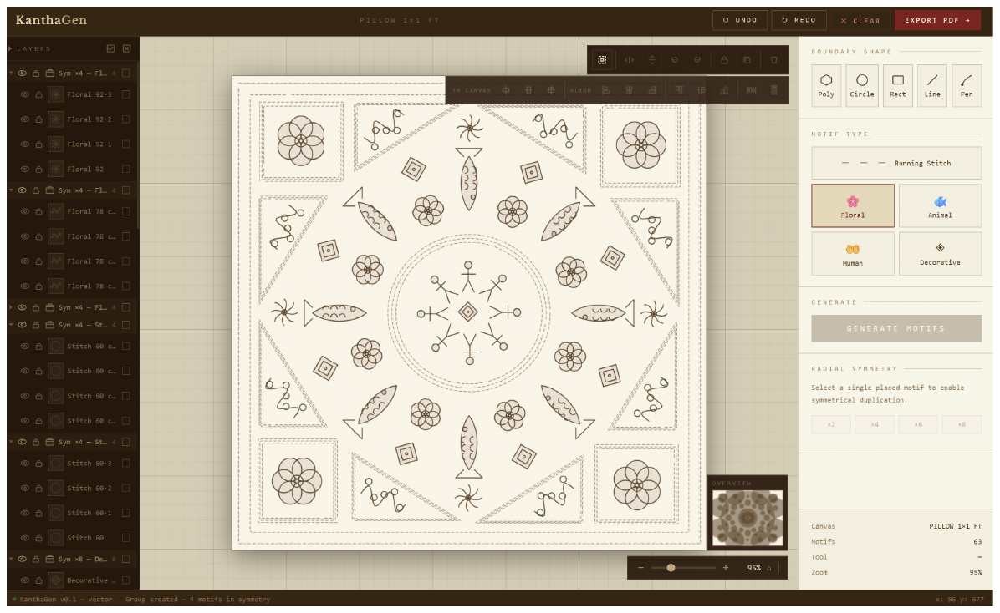
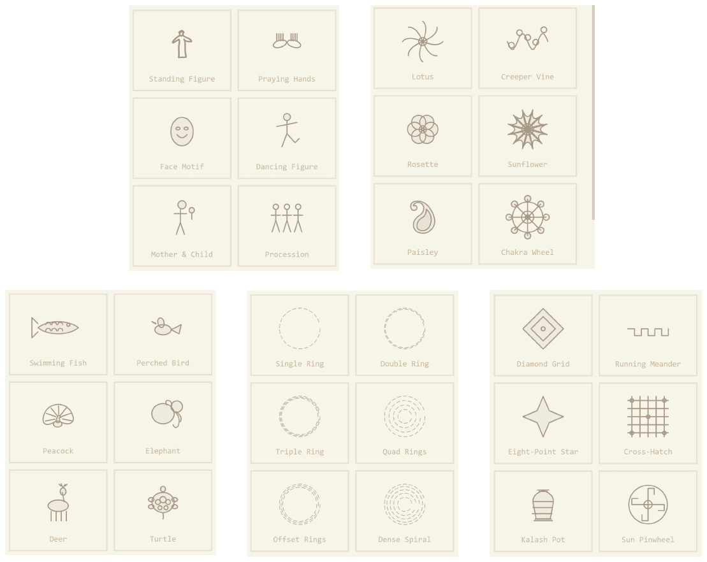
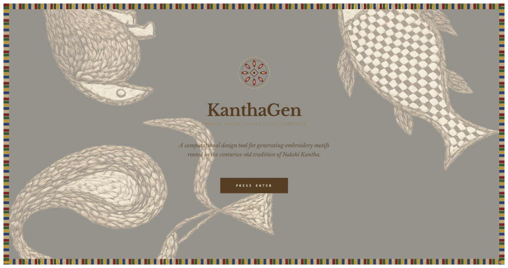
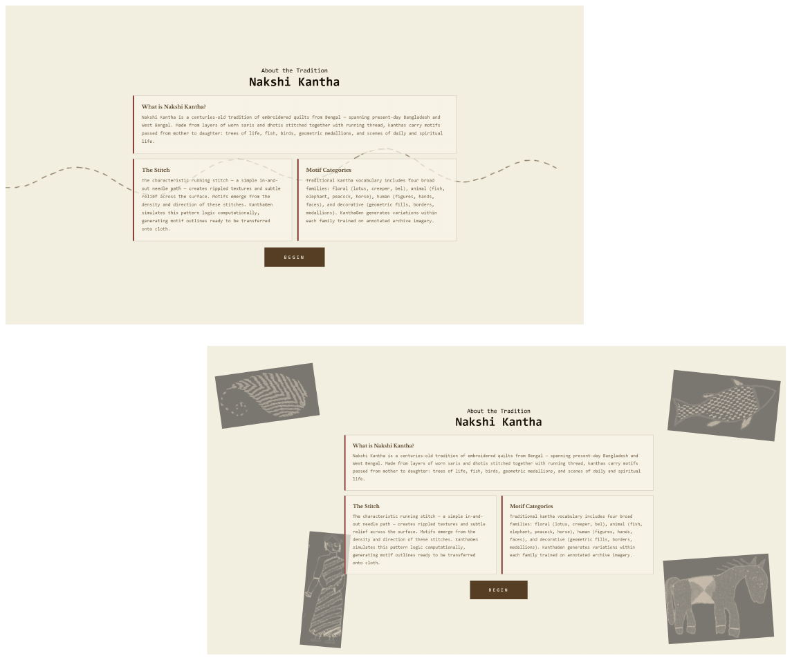
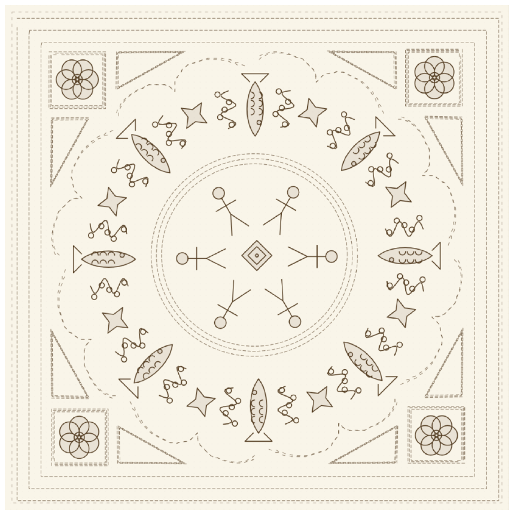
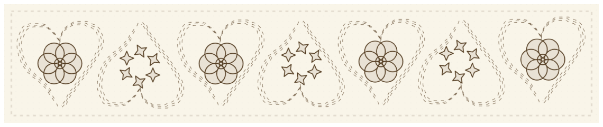
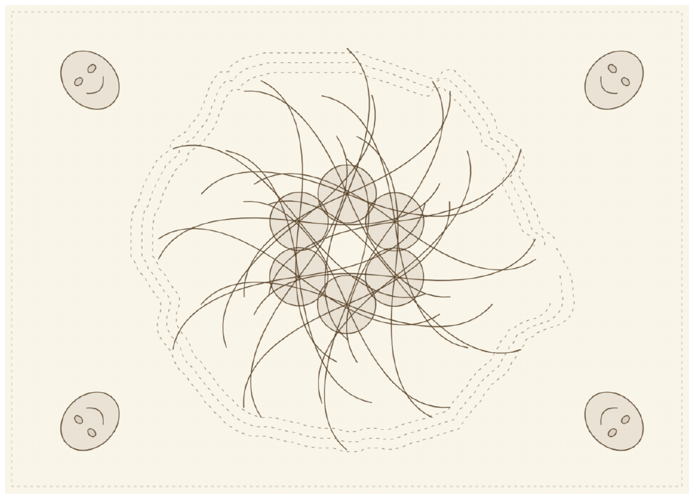
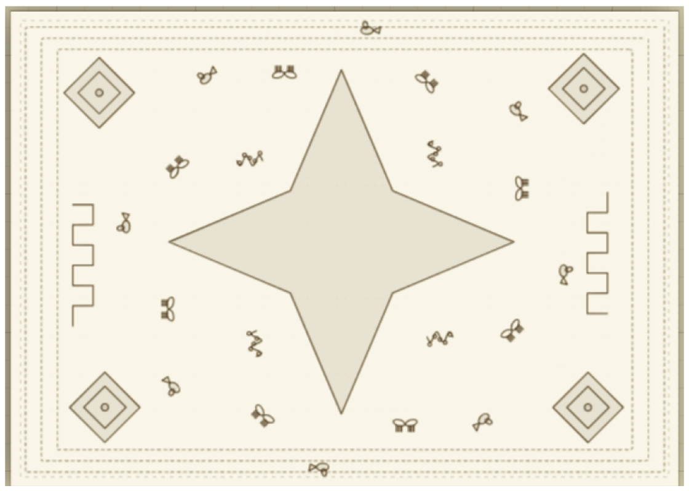
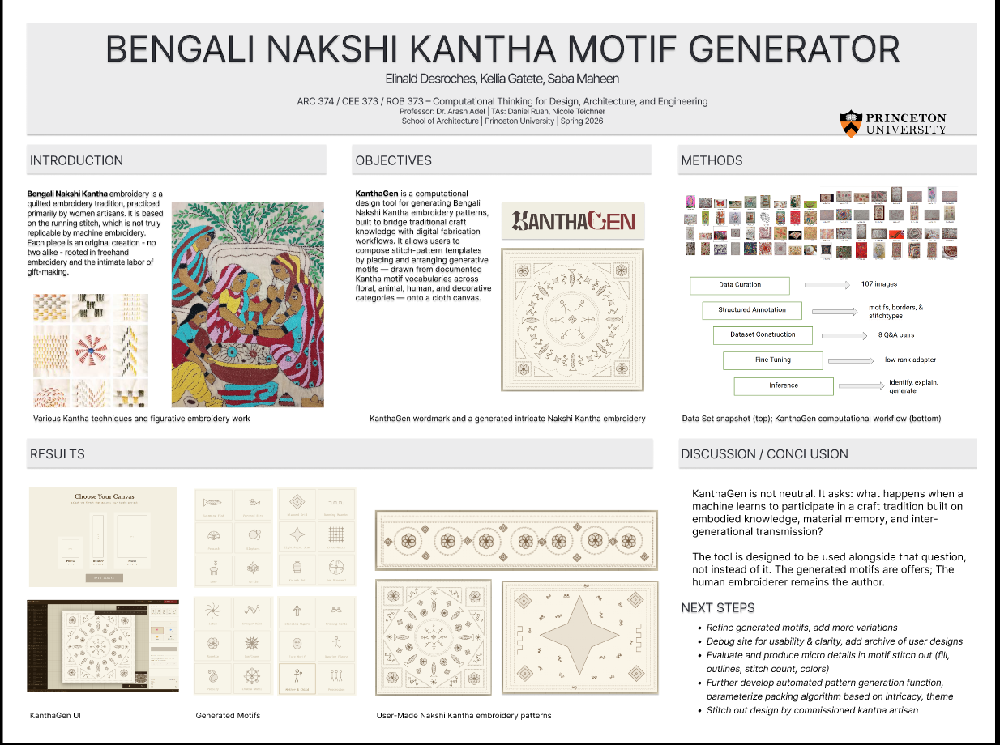

ARC 374 Computational Thinking for Design
KanthaGen
A drawing tool that composes inside a tradition instead of approximating it
With Elinald Desroches and Saba Maheen. The tool below is the real thing — it runs in your browser.
A browser tool that turns a hand-drawn region into an editable Nakshi Kantha composition, built on a curated archive of real motifs rather than invented ornament.
Approach
Generative ornament is easy to make arbitrary. So the archive came first: 107 images of motifs, borders, and stitch types, catalogued, with every procedural variant built out of that documented vocabulary. The tool composes within a tradition rather than gesturing at its surface.
What I built
Region drawing across four input types, 15 procedural motif variants, grouping and radial symmetry, layers, undo/redo, alignment and distribution, print-ready export. Plus a parameterized Hive Hotel generator that reports room count, footprint, open and green area, and density — so generated layouts can be compared, not just admired.
Testing
52 unit tests across 11 suites, against the geometry utilities, state management, and UI gating.
Radial-symmetry duplication was the hard one: rotation about a canvas centroid, where floating-point drift forces tolerance-based assertions instead of equality. Undo/redo needed its own care, since history snapshots go through JSON serialization — state immutability is an assumption worth testing rather than trusting. The edge cases held the useful findings: a degenerate single-point polygon falls back to a stitch radius of 50, and zero-length line normalization is what stops a divide-by-zero.
What users found
Four people, no instructions. Drawing and motif generation landed. Export did not — one user couldn't find the download and screenshotted the canvas instead, losing quality. Another never discovered resize. A third fought the double-click on the freehand boundary.
Both feature requests were about range, not bugs: a colour picker scoped to one motif or several, and an example library showing what a finished composition looks like. Discoverability was the finding, and that's a design problem.
What I'd do differently
We started with a VLLM generating motifs from annotated references. Getting from annotations to images the interface could actually consume didn't come together, so we moved to procedural SVG — a deliberate trade of novelty for control and crispness.
The next version revives that pipeline properly: generate from annotated references, vectorize to editable SVG, feed it into the same interface. Then direct SVG/PDF export, adjustable stitch parameters, and coverage and repetition metrics so a composition can be measured.
Documentation
Drop file atassets/kanthagen/demo.mp4

Drop file atassets/kanthagen/ui-composition.png

Drop file atassets/kanthagen/motif-categories.png

Drop file atassets/kanthagen/landing.png

Drop file atassets/kanthagen/info-page.png

Drop file atassets/kanthagen/pillow-mandala.png

Drop file atassets/kanthagen/runner-freehand.png

Drop file atassets/kanthagen/tapestry-lotus.png

Drop file atassets/kanthagen/tapestry-border.png

Drop file atassets/kanthagen/poster.png